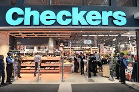
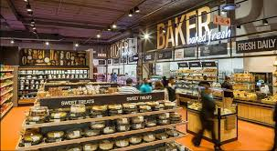

Checkers
 
Checkers Metlife Mall/p>
Better and better; this is what we strive for on behalf of the millions of customers who’ve made Checkers a household name since 1956. But what does it really mean to be “better and better”? Well, our track record for pushing boundaries can be traced back to the opening of our maiden store in Mayfair, Johannesburg. As it turned out, that first, humble 38 square metre outlet would become the incubator for many groundbreaking ideas for the then fledgling supermarket.
Today, backed by the biggest food retail group in Africa, we’re able to tap into a wealth of resources that further fuel our innovative spirit and drive to be better and better. The Shoprite Checkers family’s collective mission is to bring products and services to market that delight in both quality and price, and we’re able to do that thanks to a shared commitment to our customers.
Here’s a brief look at our journey to becoming SA’s most loved retailer:
1956 Our first store opens in Mayfair, Johannesburg.
1950s Checkers counters retail price wars with its affordable House Brands.
1960s We grow from three stores to a chain of 85 stores nationally.
1968 The first ever locally manufactured trolleys are delivered to Checkers stores.
1960’s We become the first retail chain store to use high-density polyethylene bags.
1982 Checkers pioneers the trolley lock system which saves millions in theft.
1984 Spearheaded a from-home shopping scheme via the South African Post Office.
1985 We introduce the first card payment system in partnership with Barclays Bank.
1985 Launches the first grocery delivery system the country has ever seen.
1986 Introduction of an early version of product price scanning in stores.
1990 We launch the biggest customer engagement drive by a national retailer.
1991 Checkers joins the biggest food retail group on the continent.